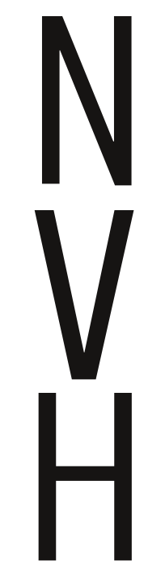
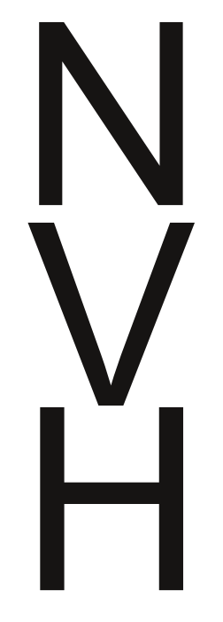
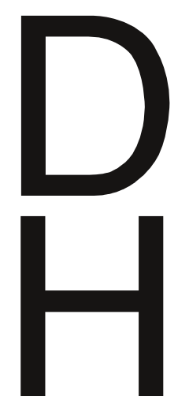
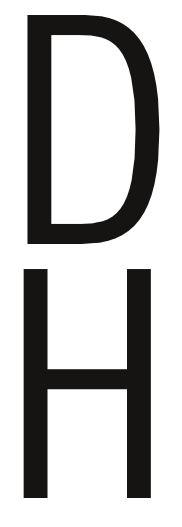
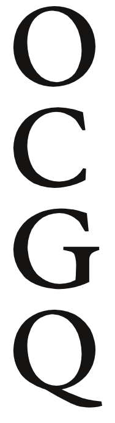
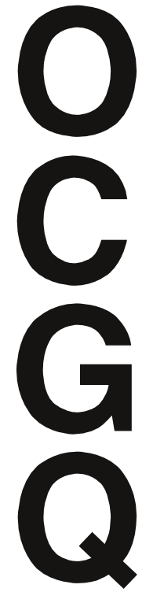
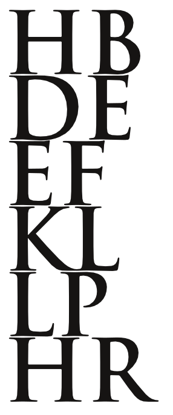
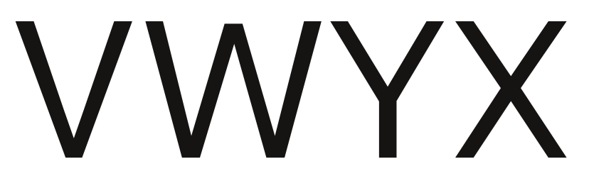

Заглавные буквы
Создание заглавных букв должно происходить по схеме, очень похожей на создание строчных букв. Начать с разработки ключевых букв, форма и характеристики которых подходят для создания символов, имеющих общую форму. Как и в случае со строчными буквами, частота использования букв также остается важным фактором при выборе букв.
Первые две буквы дизайна — “H” и “O”. Дизайн этих букв должен быть не просто по отношению друг к другу, но и по отношению к существующим строчным буквам.
Именно на этом этапе определить пропорцию нижнего регистра к верхнему. Возможно, задача настроить верхние и нижние элементы нижнего регистра или настроить прописные буквы на нижний регистр, чтобы создать пропорции, соответствующие цели дизайна.
Вес штрихов в верхнем регистре часто должен быть несколько тяжелее, чем штрихов в нижнем регистре. Возможно, задача провести интерполяционный эксперимент, чтобы быстро определить, насколько они должны быть тяжелее.
Следующий набор букв, который следует рассмотреть для добавления, — это A E S I N и либо P, либо D и, возможно, V.
В зависимости от стиля шрифта, который создать, обнаружить, что заглавные буквы требуют большего изменения ширины, чем строчные буквы. Ширина E S и P может быть существенно уже, чем H, или может быть одинаковой.
Generally the N and V are similar to H but slightly wider.
|  |  |
 |
D может быть похоже на H или немного шире.
|  |  |
 |
Форма O может многое рассказать о C, G и Q. Форма H расскажет немного о I и J, а также о левой стороне B D E F K L P R.
Расскажет немного о T и U. Форма A может многое рассказать о форме V.
|  |  |
 |
|  |  |
Форма и пропорции V немного расскажут о том, как спроектировать Y W X. Форма Z характерна.
 |
|  |
 |
 |